Java Beans

The JavaBeans™ architecture is based on a component model which enables
developers to create software units called components.
Components are self-contained, reusable software units that can be
visually assembled into composite components, applets, applications,
and servlets using visual application builder tools. JavaBean
components are known as beans.
Expected duration: 60 minutes


Software
Needed
Before you begin, you need to install required software (JDK and
NetBeans IDE) on your
computer as
described
here. Also download and unzip the hands-on lab file mentioned
below.
- 1029_javabeans.zip (download)
- The zip file contains this document and the lab contents
- Download it and unzip in a directory of your choice
Change Log
- March. 5th, 2007: Created
- Sep. 10th, 2009: Updated with NetBeans 6.7.1, Homework is added
- March 25th, 2010: Updated and tested with NetBeans 6.8 (Sang Shin)
Lab Exercises
Exercise 1: Manipulate a JavaBean from a
builder tool
In this exercise, you are going to create
a simple visual JavaBean called SimpleBeanJLabel
and build a jar file
that contains it. You are going to then add the bean to the a
builder tool, in this case NetBeans IDE. Finally you are going to
manipulate the properties of the bean through the builder tool.
(1.1)
Create a
SimpleBeanJLabel JavaBean and jar file that contains it
1. Create a NetBeans project
- Select File from
top-level menu and
select New Project.
- Observe that the New Project
dialog box appears.
- Select Java under Categories section and Java Application under Projects section.
- Click Next.
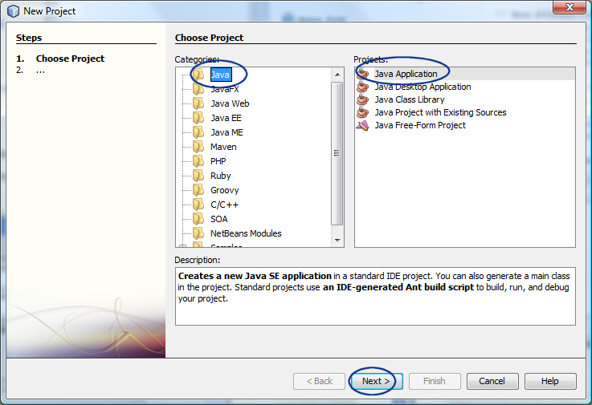
- Under Name
and Location pane, for the Project
Name field, enter BeansExample.
(Figure-1.11 below)
- Uncheck the Create Main Class
field.
This is to indicate that you are not going to create Main class.
- Click Finish.
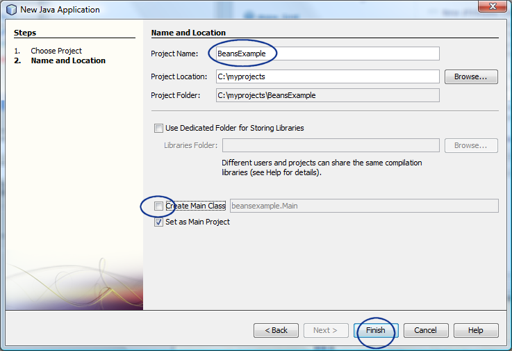
Figure-1.11: Create BeansEample project
- Observe that the BeansExample project
node is created
under Projects pane of the
NetBeans IDE.
2. Write
SimpleBeanJLabel.java.
SimpleBeanJLabel class is an
example
of a visual JavaBean.
- Right click BeansExample and
select New->Java
Class.
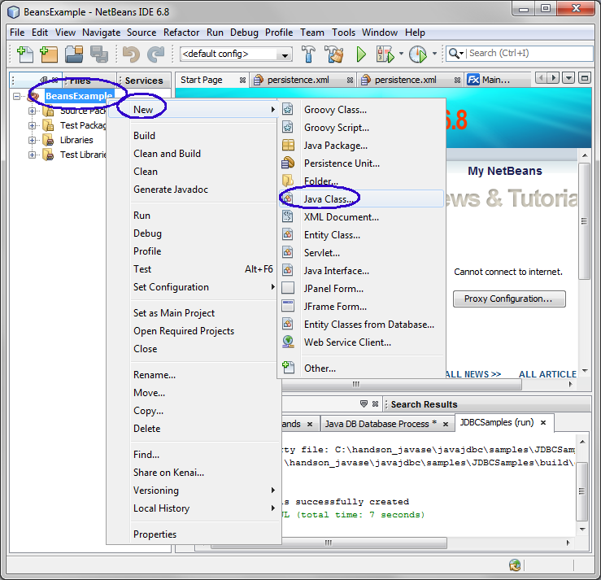
- Observe that the Name and
Location pane of the New Java
Class dialog box appears.
- For the Class Name
field, enter SimpleBeanJLabel.
(Figure-1.12 below)
- For the Package field, enter a package name of your choice.
In this example below, for the sake of simplicity, we are not creating
a package.
- Click Finish.
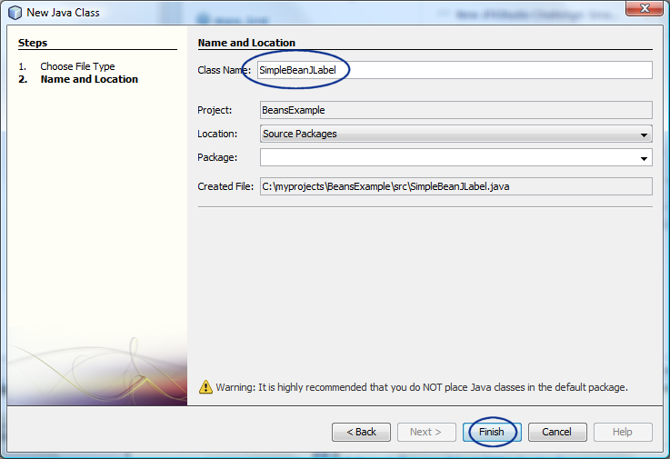
Figure-1.12: Create SimpleBeanJLabel.java
- Observe that the IDE generated SimpleBeanJLabel.java
is displayed in the editor window.
- Modify the IDE generated SimpleBeanJLabel.java
as shown in Code-1.13 below.
import java.awt.Color;
import javax.swing.JLabel;
import java.io.Serializable;
public class SimpleBeanJLabel extends JLabel
implements Serializable {
public SimpleBeanJLabel() {
setText( "Hello world!" );
setOpaque( true );
setBackground( Color.RED );
setForeground( Color.YELLOW
);
setVerticalAlignment( CENTER
);
setHorizontalAlignment(
CENTER );
}
}
|
Code-1.13: SimpleBeanJLabel.java
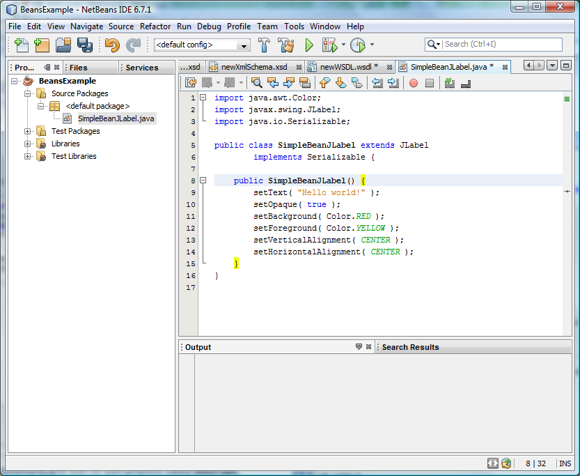
3. Write
SimpleBeanJLabel2.java
(following similar steps you took above for creating SImpleBeanJLabel
class).
SimpleBeanJLabel2 is an extension of the
SimpleBeanJLabel with its own
property called
labelType.
public
class SimpleBeanJLabel2 extends SimpleBeanJLabel {
private String labelType;
public String getLabelType() {
return labelType;
}
public void setLabelType(String labelType) {
this.labelType = labelType;
}
}
|
Code-1.14: SimpleBeanJLabel2.java
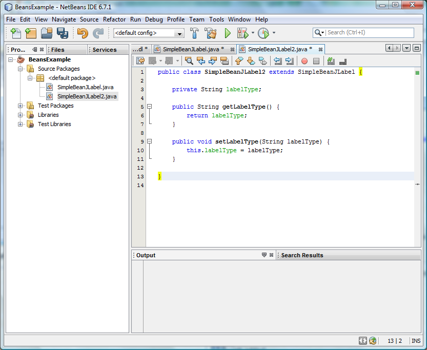
4. Build the project. Building a project will create a jar file.
- Right click BeansExample project
node and select Build
(or Run).
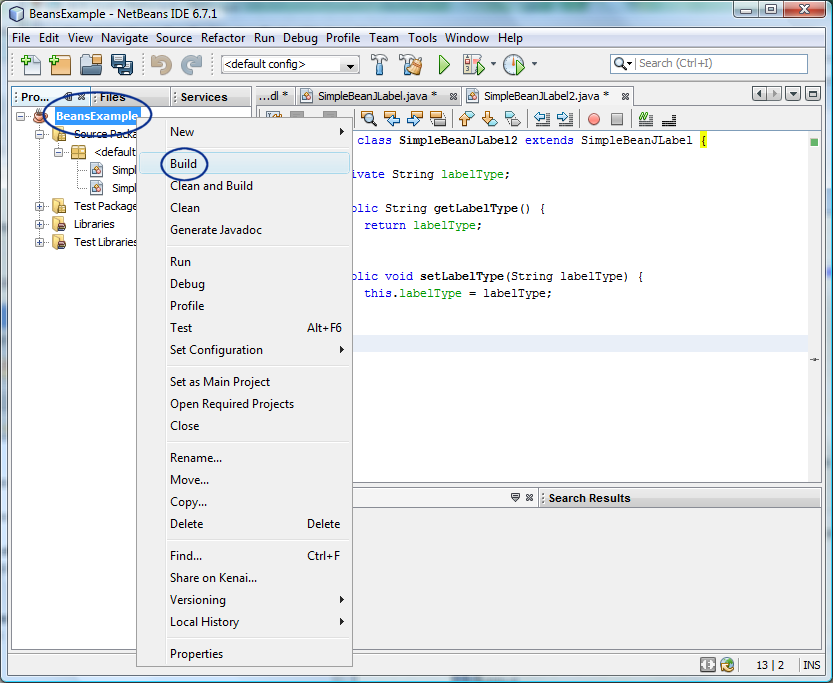
- This will build a jar file called BeanExample.jar that contains the SimpleBeanJLabel and SimpleBeanJLabel2 JavaBean's.
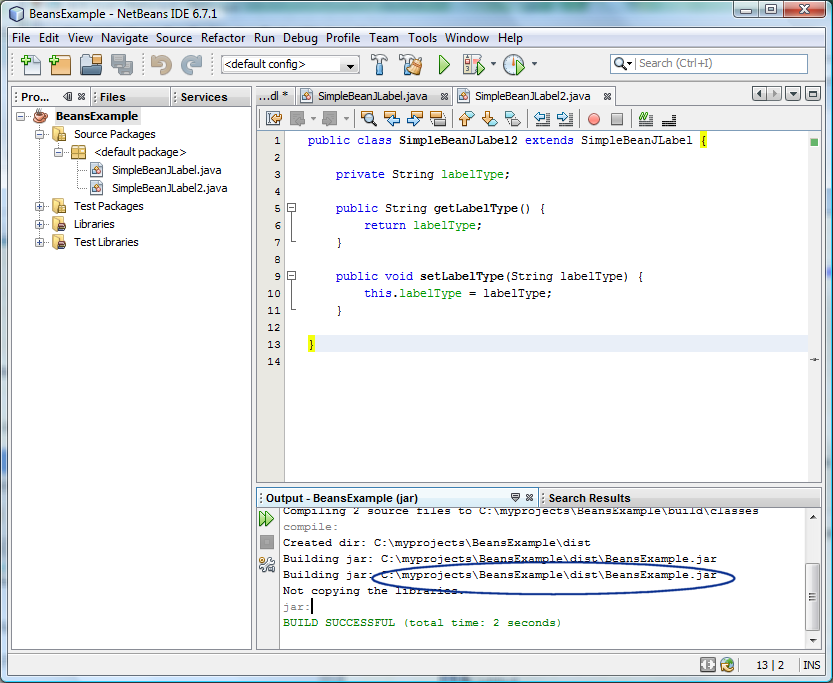
5. Observe that a jar file is created.
- Click Files view of the
project. The Files view displays the physical directory structure
and files of the project.
- Expand BeansExample->dist.
- Observe that BeansExample.jar
file is created.
- Expand the BeansExample.jar
file.
- Observe that SimpleBeanJLabel.class
and SimpleBeanJLabel2.class are
inside the BeansExample.jar
file. (Figure-1.16 below)
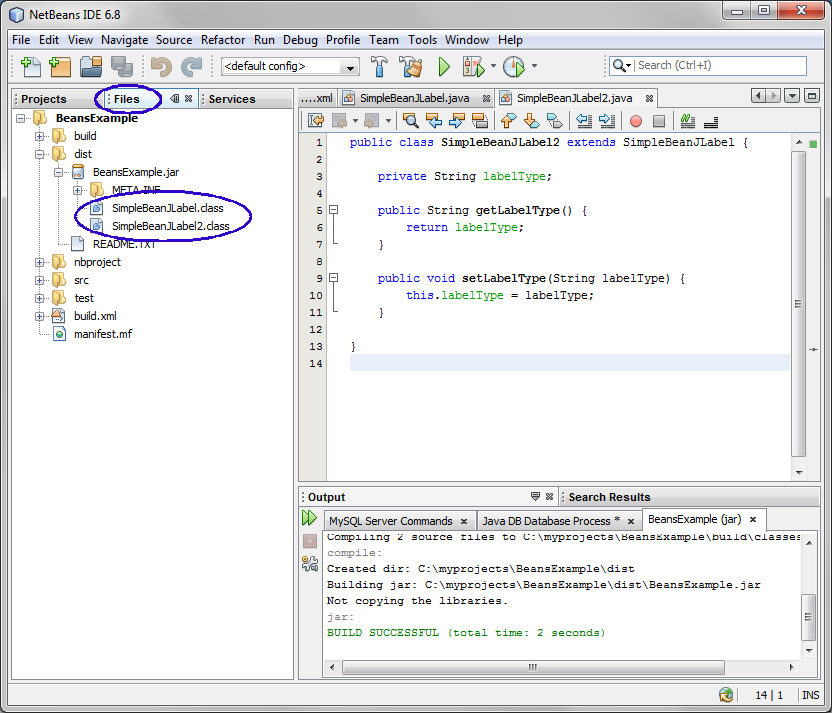
Figure-1.16: BeansExample.jar
- Click Projects tab
to return to the Projects view.
Solution:
This exercise up to this point is provided as a ready-to-open-and-run
NetBeans project as part of hands-on lab zip file. You can find it as
<LAB_UNZIPPED_DIRECTORY>/javabeans/samples/BeansExample.
You can just open it and run it.
return to top of the exercise
(1.2)
Add the bean to the builder tool
1. Create a NetBeans project
- Select File from
top-level menu and
select New Project.
- Observe that the New Project
dialog box appears.
- Select Java under Categories section and Java Application under Projects section.
- Click Next.
- Under Name
and Location pane, for the Project
Name field, enter BeansUserExample.
- For the Create Main Class
field, enter BeansUserExample.
This is to create Main class named as BeansUserExample.
- Click Finish.
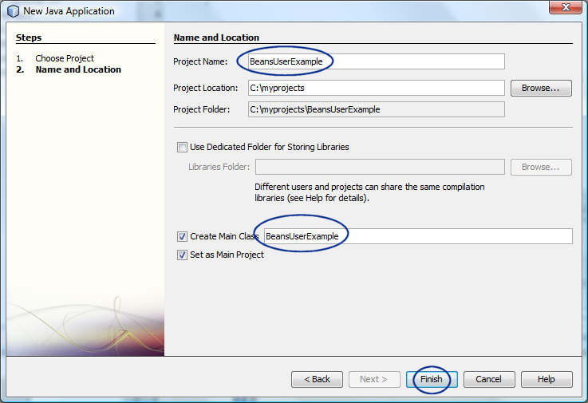
- Observe that the BeansUserExample
project node is created
under Projects pane of the
NetBeans IDE and IDE generated BeansUserExample.java
is displayed in the
editor window of the IDE.
2. Create a new
JFrame Form.
- Right click BeansUserExample and
select New->JFrame Form.
(Figure-1.21 below)

Figure-1.21: Create JFrame Form
- Observe that the Name and
Location pane of the New
JFrame Form dialog box appears.
- For the Class Name
field, enter MyForm.
(Figure-1.22 below)
- Click Finish.
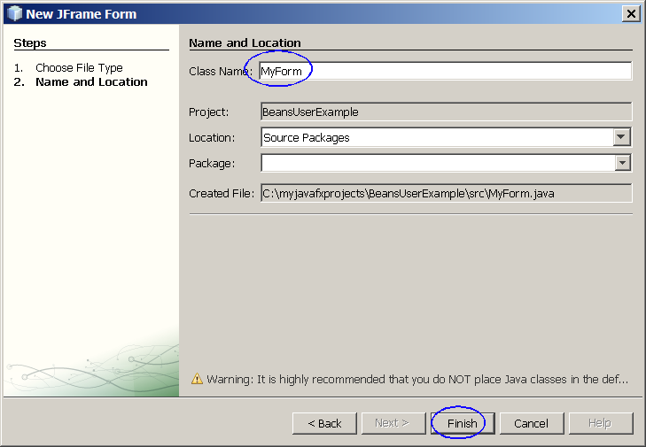
Figure-1.22: Give a name to the JFrame class
- Observe that Design view
of the MyForm.java is
displayed in the
middle of the IDE and Palette is
displayed in the right side of the IDE. (Figure-1.23 below)
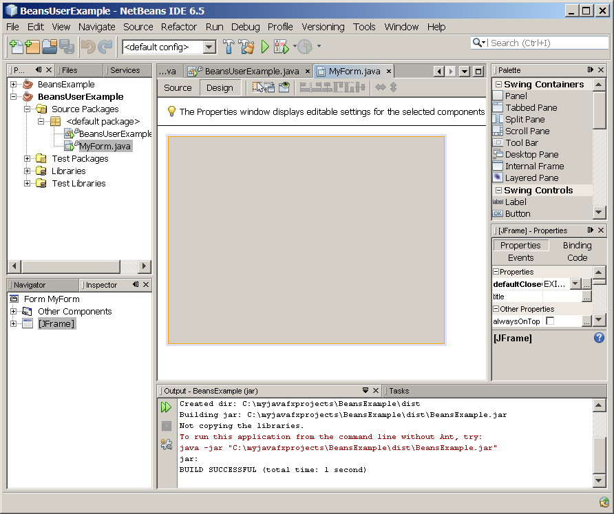
Figure-1.23: MyForm.java
3. Add
SimpleBeanJLabel visual
bean to the
Palette.
- Right click in any point in the Palette
pane.
- Select Palette Manager
from the pop-up menu. (Figure-1.24 below)
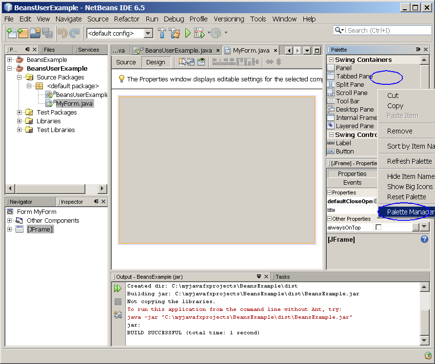
Figure-1.24: Open Palette Manager
- Observe that the Palette Manager
dialog box appears.
- Select Add From JAR.
(Figure-1.25 below) You are about to add a jar file that contains
beans. You can also select Add from Project, which will let you
see the beans from Project standpoint.
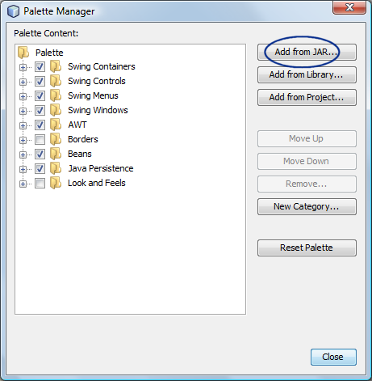
Figure-1.25: Palette Manager
- Observe that the Install
Components to Palette dialog box appears.
- Browse down to the dist directory
of the BeansExample project
that contains BeansExample.jar
file you created in the previous step.
- Select BeansExample.jar
and click Next. (Figure-1.26 below)
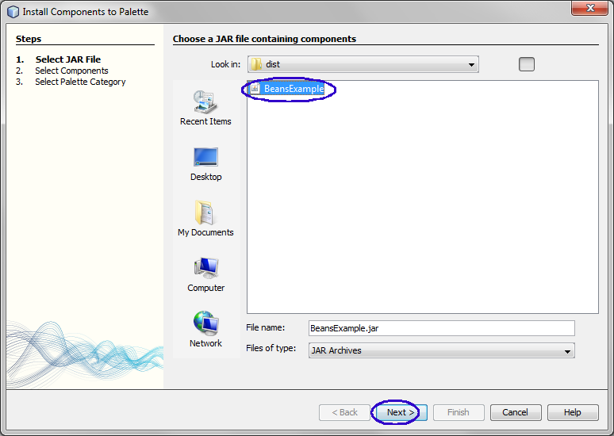
Figure-1.26: Select JAR file
- Observe that all the beans in the BeansExample.jar file are displayed
for selection.
- Select both SimpleBeanJLabel and
SimpleBeanJLabel2 beans
and click Next.
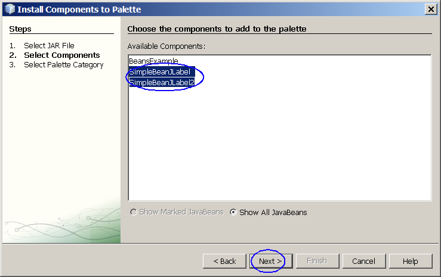
Figure-1.27: Select beans
- Select Beans (or
whatever category you want to add the bean) as a Palette category.
- Click Finish.
(Figure-1.28 below)
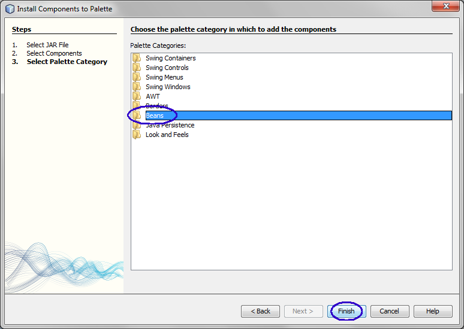
Figure-1.28: Select palette category
- Observe that Palette Manager
is now the front window.
- Expand the Beans and
observe that SimpleBeanJLabel and
SimpleBeanJLabel2 beans
are now
present. (Figure-1.29 below)
- Click Close button of the Palette Manager window.
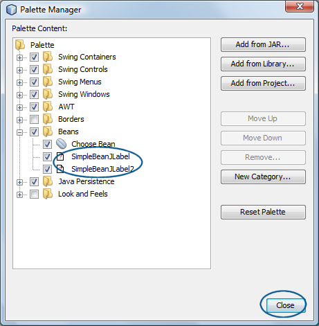
Figure-1.29: SimpleBeanJLabel is added
Solution:
This exercise up to this point is provided as a ready-to-open-and-run
NetBeans project as part of hands-on lab zip file. You can find it as
<LAB_UNZIPPED_DIRECTORY>/javabeans/samples/BeansUserExample.
You can just open it and run it.
return to top of
the exercise
(1.3)
Change the properties of the beans through the builder tool
1. Add the
SimpleBeanJLabel bean
to the design window.
- Observe that the SimpleBeansJLabel
bean is under Beans category
in the
Palette.
- Drag and drop the SimpleBeanJLabel
to the design window.
- Observe that the red-colored Hello
world! label is displayed.
(Figure-1.30 below)
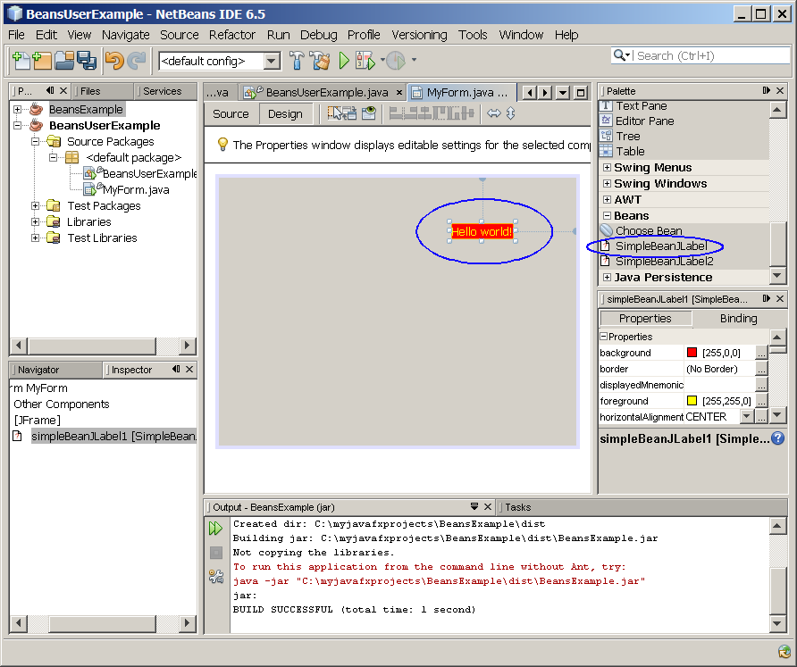
Figure-1.30: SimpleBeanJLabel is added to the form
2. Manipulate the properties of the
SimpleBeansJLabel
bean.
- Click ...
box of the background property
to select a color of your
choice.
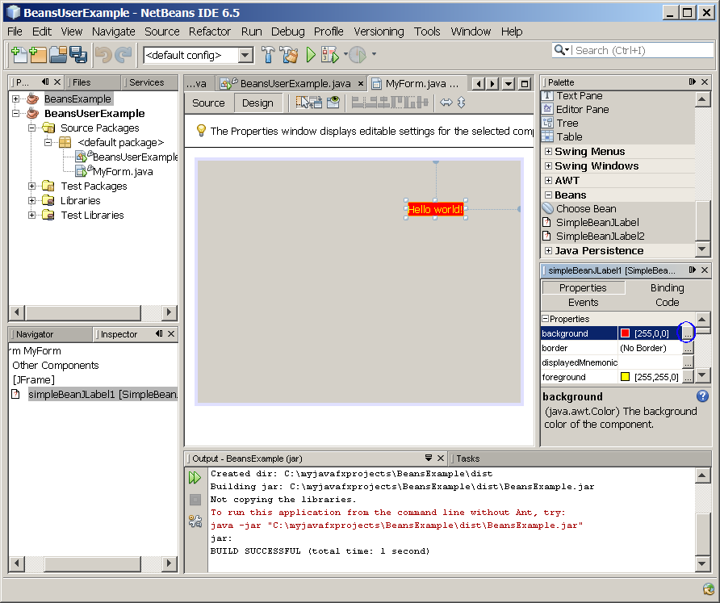
- Observe that the backgound color chooser dialog box appears.
- Choose whatever color of your choice - in the example below, [0,
51, 204] is selected.
- Click OK.
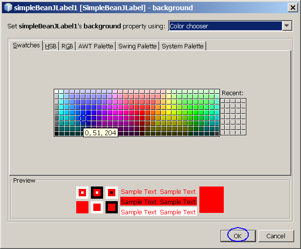
- Change the text property of the bean to your name, for example, Sang Shin in the example below.
- Observe that the background color and text of the bean is changed
in the design window. (Figure-1.31 below)
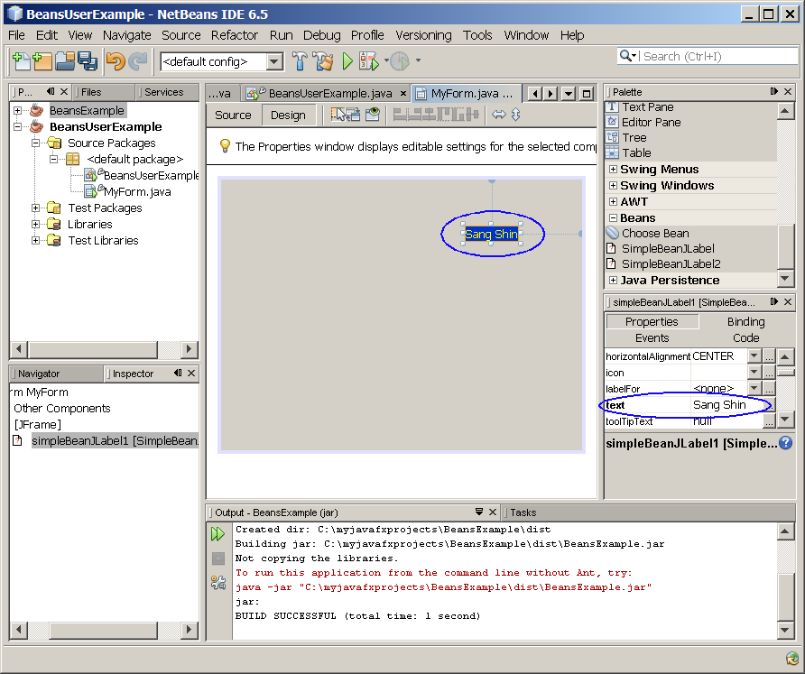
Figure-1.31: Properties of the SimpleBeansJLabel bean are changed
3. Manipulate the properties of the
SimpleBeansJLabel2
bean.
- Drag and drop the SimpleBeanJLabel2
bean to the design window.
- Observe that the red-colored Hello world! label is displayed
- Change the labelType property
of the bean to simple from
null or
whatever color you want. (Figure-1.33 below)
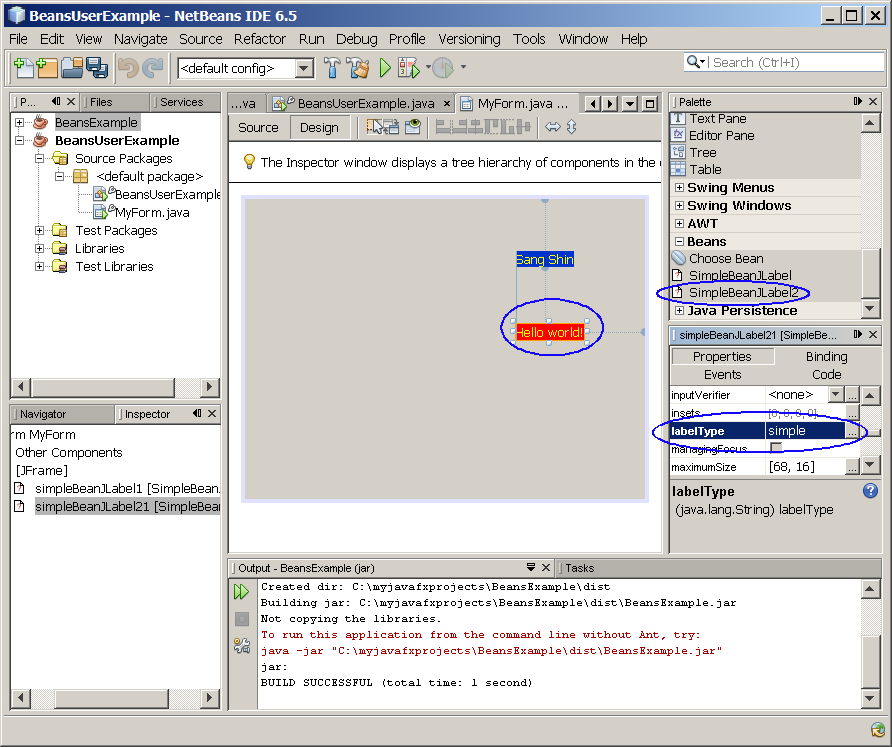
Figure-1.33: Change the labelType property of the bean
return to top of
the exercise
Summary
In this exercise, you first created a
simple visual JavaBean
called SimpleBeanJLabel and built a jar file that contains it.
You then added the beans to the a builder tool, in this case
NetBeans. Finally changed the properties of the
bean through the builder tool.
Return
to the top
Exercise 2: Create JavaBean's with various
property types
In this exercise, you are going to build
various beans which have different types of properties.
(2.1)
Use two overloaded methods to the StudentRecord class
1. Create a NetBeans project
- Select File from
top-level menu and
select New Project.
- Observe that the New Project
dialog box appears.
- Select Java under Categories section and Java Application under Projects section.
- Click Next.
- Under Name
and Location pane, for the Project
Name field, enter BeansExample2.
(Figure-1.11 below)
- De-select Create Main Class
field.
- Click Finish.
2. Write
MyBean.java.
This is a very simple non visual bean.
import java.io.Serializable;
public class MyBean implements Serializable {
/** Creates a new instance of MyBean */
public MyBean() {
}
/**
* Holds value of property title.
*/
private String title;
/**
* Getter for property title.
* @return Value of property title.
*/
public String getTitle() {
return this.title;
}
/**
* Setter for property title.
* @param title New value of property title.
*/
public void setTitle(String title) {
this.title = title;
}
}
|
Code-2.11: MyBean.java
3. Write
MyBeanIndexedProperties.java.
import java.awt.Graphics;
import java.io.Serializable;
import javax.swing.JComponent;
/**
* Bean with a simple property "title"
* and an indexed property "lines".
*/
public class MyBeanIndexedProperties
extends JComponent
implements Serializable {
private String title;
private String[]
lines = new String[10];
public String getTitle() {
return this.title;
}
public void setTitle( String title ) {
this.title = title;
}
public String[]
getLines() {
return this.lines.clone();
}
public String
getLines( int index ) {
return this.lines[index];
}
public void
setLines( String[] lines ) {
this.lines = lines;
}
public void
setLines( int index, String line ) {
this.lines[index] = line;
}
protected void paintComponent( Graphics g ) {
g.setColor( getForeground()
);
int height =
g.getFontMetrics().getHeight();
paintString( g, this.title,
height );
if ( this.lines != null ) {
int
step = height;
for
( String line : this.lines )
paintString( g, line, height += step );
}
}
private void paintString( Graphics g, String str,
int height ) {
if ( str != null )
g.drawString( str, 0, height );
}
}
|
Code-2.12: MyBeanIndexedProperties.java
4. Write
MyBeanBoundProperties.java.
import java.awt.Graphics;
import java.beans.PropertyChangeListener;
import java.beans.PropertyChangeSupport;
import java.io.Serializable;
import javax.swing.JComponent;
/**
* Bean with bound properties.
*/
public class MyBeanBoundProperties
extends JComponent
implements Serializable {
private String title;
private String[] lines = new String[10];
private final
PropertyChangeSupport pcs
= new PropertyChangeSupport( this );
public String getTitle() {
return this.title;
}
public void setTitle( String title ) {
String old = this.title;
this.title = title;
this.pcs.firePropertyChange(
"title", old, title );
}
public String[] getLines() {
return this.lines.clone();
}
public String getLines( int index ) {
return this.lines[index];
}
public void setLines( String[] lines ) {
String[] old = this.lines;
this.lines = lines;
this.pcs.firePropertyChange(
"lines", old, lines );
}
public void setLines( int index, String line ) {
String old =
this.lines[index];
this.lines[index] = line;
this.pcs.fireIndexedPropertyChange( "lines", index, old, lines );
}
public void
addPropertyChangeListener(
PropertyChangeListener listener ) {
this.pcs.addPropertyChangeListener( listener );
}
public void
removePropertyChangeListener(
PropertyChangeListener listener ) {
this.pcs.removePropertyChangeListener( listener );
}
protected void paintComponent( Graphics g ) {
g.setColor( getForeground()
);
int height =
g.getFontMetrics().getHeight();
paintString( g, this.title,
height );
if ( this.lines != null ) {
int
step = height;
for
( String line : this.lines )
paintString( g, line, height += step );
}
}
private void paintString( Graphics g, String str,
int height ) {
if ( str != null )
g.drawString( str, 0, height );
}
}
|
Code-2.13: MyBeanBoundProperties.java
5. Write
MyBeanConstrainedProperties.java.
import java.io.Serializable;
import java.beans.PropertyChangeListener;
import java.beans.PropertyChangeSupport;
import java.beans.PropertyVetoException;
import java.beans.VetoableChangeListener;
import java.beans.VetoableChangeSupport;
import java.awt.Graphics;
import javax.swing.JComponent;
/**
* Bean with constrained properties.
*/
public class MyBeanConstrainedProperties
extends JComponent
implements Serializable {
private String title;
private String[] lines = new String[10];
private final
PropertyChangeSupport pcs = new
PropertyChangeSupport( this );
private final
VetoableChangeSupport vcs = new
VetoableChangeSupport( this );
public String getTitle() {
return this.title;
}
/**
* This
method was modified to throw the
PropertyVetoException
* if
some vetoable listeners reject the new
title value
*/
public void
setTitle( String title )
throws
PropertyVetoException {
String old = this.title;
this.vcs.fireVetoableChange(
"title", old, title );
this.title = title;
this.pcs.firePropertyChange(
"title", old, title );
}
public String[] getLines() {
return this.lines.clone();
}
public String getLines( int index ) {
return this.lines[index];
}
/**
* This method throws the PropertyVetoException
* if some vetoable listeners reject the new
lines value
*/
public void setLines( String[] lines )
throws PropertyVetoException {
String[] old = this.lines;
this.vcs.fireVetoableChange(
"lines", old, lines );
this.lines = lines;
this.pcs.firePropertyChange(
"lines", old, lines );
}
public void setLines( int index, String line )
throws PropertyVetoException {
String old =
this.lines[index];
this.vcs.fireVetoableChange(
"lines", old, line );
this.lines[index] = line;
this.pcs.fireIndexedPropertyChange( "lines", index, old, line );
}
public void addPropertyChangeListener(
PropertyChangeListener listener ) {
this.pcs.addPropertyChangeListener( listener );
}
public void removePropertyChangeListener(
PropertyChangeListener listener ) {
this.pcs.removePropertyChangeListener( listener );
}
/**
* Registration of the VetoableChangeListener
*/
public void addVetoableChangeListener(
VetoableChangeListener listener ) {
this.vcs.addVetoableChangeListener( listener );
}
public void removeVetoableChangeListener(
VetoableChangeListener listener ) {
this.vcs.addVetoableChangeListener( listener );
}
protected void paintComponent( Graphics g ) {
g.setColor( getForeground()
);
int height =
g.getFontMetrics().getHeight();
paintString( g, this.title,
height );
if ( this.lines != null ) {
int
step = height;
for
( String line : this.lines )
paintString( g, line, height += step );
}
}
private void paintString( Graphics g, String str,
int height ) {
if ( str != null )
g.drawString( str, 0, height );
}
}
|
Code-2.14: MyBeanConstrainedProperties.java
6. Write
MyBeanJComponent.java.
import java.awt.Graphics;
import java.io.Serializable;
import javax.swing.JComponent;
/**
* Bean with a simple property "title".
*/
public class MyBeanJComponent
extends JComponent
implements Serializable {
private String title;
public String getTitle() {
return this.title;
}
public void setTitle( String title ) {
this.title = title;
}
protected void paintComponent( Graphics g ) {
g.setColor( getForeground()
);
int height =
g.getFontMetrics().getHeight();
if ( this.title != null )
g.drawString(this.title, 0, height );
}
}
|
Code-2.15: MyBeanJComponent.java
3. Build the jar file.
- Right click BeansExample2 and
select Build.
Solution:
This exercise up to this point is provided as a ready-to-open-and-run
NetBeans project as part of hands-on lab zip file. You can find it as
<LAB_UNZIPPED_DIRECTORY>/javabeans/samples/BeansExample2.
You can just open it and run it.
return to top of
the exercise
Summary
In this exercise, you have built
jar file that contains various beans with different types of properties.
return to the top
Exercise 3: Introspection
In this exercise, you will learn
how to use Introspection API to introspect a bean.
- Introspect a bean
(3.1)
Instrospect a bean
1. Create a NetBeans project
- Select File from
top-level menu and
select New Project.
- Observe that the New Project
dialog box appears.
- Select Java under Categories section and Java Application under Projects section.
- Click Next.
- Under Name
and Location pane, for the Project
Name field, enter IntrospectionExample.
- For the Create Main Class
field, enter IntrospectionExample.
- Click Finish.
- Observe that the IntrospectionExample
project node is created
under Projects pane of the
NetBeans IDE.
2. Modify the IDE generated IntrospectionExample.java.
- Modify the IntrospectionExample.java
as
shown in Code-3.11 below.
- Study the code by special attention to the bold-fonted code.
import java.beans.BeanInfo;
import java.beans.IntrospectionException;
import java.beans.Introspector;
import java.beans.MethodDescriptor;
import java.beans.PropertyDescriptor;
public class IntrospectionExample {
public static void main( String[] args )
throws IntrospectionException {
// Get bean information via Introspection
BeanInfo info = Introspector.getBeanInfo( SimpleBean.class );
// Display properties of a bean
for ( PropertyDescriptor pd : info.getPropertyDescriptors() ){
System.out.println( "Field of SimpleBean = " + pd.getName() );
}
// Display methods of a bean
for ( MethodDescriptor md : info.getMethodDescriptors() ){
System.out.println( "Methods of SimpleBean = " + md.getName() );
}
}
}
|
Code-3.11: Modified IntrospectionExample.java
3. Write SimpleBean.java.
import java.io.Serializable;
public class SimpleBean implements Serializable{
private final String name = "SimpleBean";
private int size;
public String getName() {
return this.name;
}
public int getSize() {
return this.size;
}
public void setSize( int size ) {
this.size = size;
}
}
|
Figure-3.12: SimpleBean.java
4. Build and run the program.
- Right click IntrospectionExample project node and select Run.
- Observe the result in the Output window. (Figure-3.13 below)
Field of SimpleBean = class
Field of SimpleBean = name
Field of SimpleBean = size
Methods of SimpleBean = setSize
Methods of SimpleBean = hashCode
Methods of SimpleBean = getSize
Methods of SimpleBean = equals
Methods of SimpleBean = wait
Methods of SimpleBean = wait
Methods of SimpleBean = notify
Methods of SimpleBean = getClass
Methods of SimpleBean = toString
Methods of SimpleBean = notifyAll
Methods of SimpleBean = wait
Methods of SimpleBean = getName
|
Code-3.13: Result of introspection
Solution:
This exercise up to this point is provided as a ready-to-open-and-run
NetBeans project as part of hands-on lab zip file. You can find it as
<LAB_UNZIPPED_DIRECTORY>/javabeans/samples/IntrospectionExample.
You can just open it and run it.
return
to top of the exercise
Summary
In this exercise, you have learned
how to use Introspection.
return to
the top
Exercise 4: Event Handling
In this exercise, you are going to learn
how to use event handling of JavaBeans.
- Add event handling using built-in event source,
Button class
- Add event handling using your own event source
(4.1)
Add event handling using built-in event source, Button class
1. Create a NetBeans project
- Select File from
top-level menu and
select New Project.
- Observe that the New Project
dialog box appears.
- Select Java under Categories section and Java Application under Projects section.
- Click Next.
- Under Name
and Location pane, for the Project
Name field, enter ActionEventExample.
- For the Create Main Class
field, enter ActionEventExample.
- Click Finish.
- Observe that the ActionEventExample
project node is created
under Projects pane of the
NetBeans IDE and IDE generated ActionEventExample.java
is displayed in the editor window of the IDE.
2. Modify the IDE generated
ActionEventExample.java
as
shown in Code-4.11 below. Study the code by special attention to the
bold-fonted comments.
import java.awt.BorderLayout;
import javax.swing.JButton;
import javax.swing.JFrame;
import javax.swing.JTextArea;
import javax.swing.WindowConstants;
public class ActionEventExample {
public static void main(String[] args) {
JFrame frame = new JFrame(
"Button Handler" );
JTextArea area = new
JTextArea( 6, 80 );
JButton button = new
JButton( "Fire Event" );
// Register an ActionListener object to the event source
button.addActionListener( new ButtonEventHandler( area ) );
frame.add( button,
BorderLayout.NORTH );
frame.add( area,
BorderLayout.CENTER );
frame.pack();
frame.setDefaultCloseOperation( WindowConstants.DISPOSE_ON_CLOSE );
frame.setLocationRelativeTo(
null );
frame.setVisible( true );
}
}
|
Code-4.11: ActionEventExample.java
3. Write
ButtonEventHandler.java.
import
java.awt.event.ActionEvent;
import java.awt.event.ActionListener;
import javax.swing.JTextArea;
import java.awt.BorderLayout;
import javax.swing.JButton;
import javax.swing.JFrame;
import javax.swing.WindowConstants;
public class ButtonEventHandler implements ActionListener {
/**
* Component that will contain messages about
* events generated.
*/
private JTextArea output;
/**
* Creates an ActionListener that will put
messages in
* JTextArea everytime event received.
*/
public ButtonEventHandler( JTextArea output ) {
this.output = output;
}
/**
* When
receives action event notification, appends
*
message to the JTextArea passed into the constructor.
*/
public void
actionPerformed( ActionEvent event ) {
this.output.append( "Action occurred in the Button Handler: " + event +
'\n' );
}
}
|
Code-4.12: ButtonEventHandler.java
4. Build and run the program
- Right click ActionEventExample and
select Run.
- Observe the Button Handler dialog box with Fire Event button is
displayed.
- Click Fire Event button. (Figure-4.12 below)
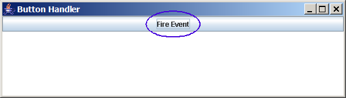
Figure-4.12: Result of running ActionEventExample
- Observe that event handler method displays "Action occurred in the Button Handler: ...".
(Figure-4.13 below)
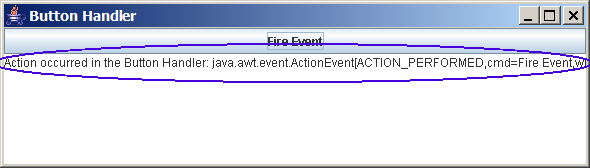
Figure-4.13: Event handler is called
Solution:
This exercise up to this point is provided as a ready-to-open-and-run
NetBeans project as part of hands-on lab zip file. You can find it as
<LAB_UNZIPPED_DIRECTORY>/javabeans/samples/ActionEventExample.
You can just open it and run it.
return to top of
the exercise
(4.2)
Add event handling using your own event source
1. Create a NetBeans project
- Select File from
top-level menu and
select New Project.
- Observe that the New Project
dialog box appears.
- Select Java under Categories section and Java Application under Projects section.
- Click Next.
- Under Name
and Location pane, for the Project
Name field, enter MyEventExample.
- For the Create Main Class
field, enter MyEventExample.
(Figure-4.10 below)
- Click Finish.
- Observe that the MyEventExample
project node is created
under Projects pane of the
NetBeans IDE and IDE generated MyEventExample.java
is displayed in the editor window of the IDE.
2. Modify the IDE generated
MyEventExample.java
as
shown in Code-4.21 below. Study the code by special attention to the
bold-fonted comments.
public class MyEventExample {
public static void main(String[] args) {
// Create an event source
MyEventSource s1 = new MyEventSource();
// Register an event listener to the event source
s1.addMyEventListener( new MyEventListenerImpl() );
// Triger an event
s1.triggerSomethingEvent("I won the lottery!");
// Trigger another event
s1.triggerSomethingEvent("She said Yes!");
}
}
|
Code-4.21: MyEventExample.java
3. Write
MyEvent.java.
import java.util.EventObject;
public class MyEvent extends
EventObject {
/** Creates a new instance of MyEvent */
public MyEvent(Object source) {
super(source);
}
public MyEvent(Object source, String myEventName) {
super(source);
this.myEventName =
myEventName;
}
private String myEventName;
public String getMyEventName() {
return myEventName;
}
public void setMyEventName(String myEventName) {
this.myEventName =
myEventName;
}
}
|
Code-4.22: MyEvent.java
4. Write
MyEventListenerInterface.java.
import java.util.EventObject;
public interface MyEventListenerInterface {
public void somethingHappened(MyEvent event);
}
|
Code-4.23: MyEventListenerInterface.java
5. Write
MyEventListenerImpl.java.
public
class MyEventListenerImpl implements MyEventListenerInterface {
public void somethingHappened(MyEvent event ){
System.out.println("Event "
+ event.getMyEventName() +
" Occurred at " + new java.util.Date());
}
}
|
Code-4.24: MyEventListenerImpl.java
6. Write
MyEventSource.java.
import java.io.Serializable;
import java.util.ArrayList;
public class MyEventSource implements Serializable {
// Maintain the event listeners
ArrayList a1 = new ArrayList();
/** Creates a new instance of MyEventSource */
public MyEventSource() {
}
public void
addMyEventListener(MyEventListenerInterface l){
a1.add(l);
}
public void
removeMyEventListener(MyEventListenerInterface l){
a1.remove(l);
}
public void triggerSomethingEvent(String eventName){
// Invoke event listener
for (Object item: a1){
MyEventListenerInterface m1 = (MyEventListenerInterface)item;
m1.somethingHappened(new MyEvent(this, eventName));
}
}
}
|
Code-4.25: MyEventSource.java
7. Build and run the program
- Right click MyEventExample and
select Run.
- Observe the result in Output window of the IDE.
(Figure-4.26 below)
Event I won the lottery!
Occurred at Sat Mar 03 17:27:25 EST 2007
Event She said Yes! Occurred at Sat Mar 03 17:27:25 EST 2007
|
Figure-4.26: Result
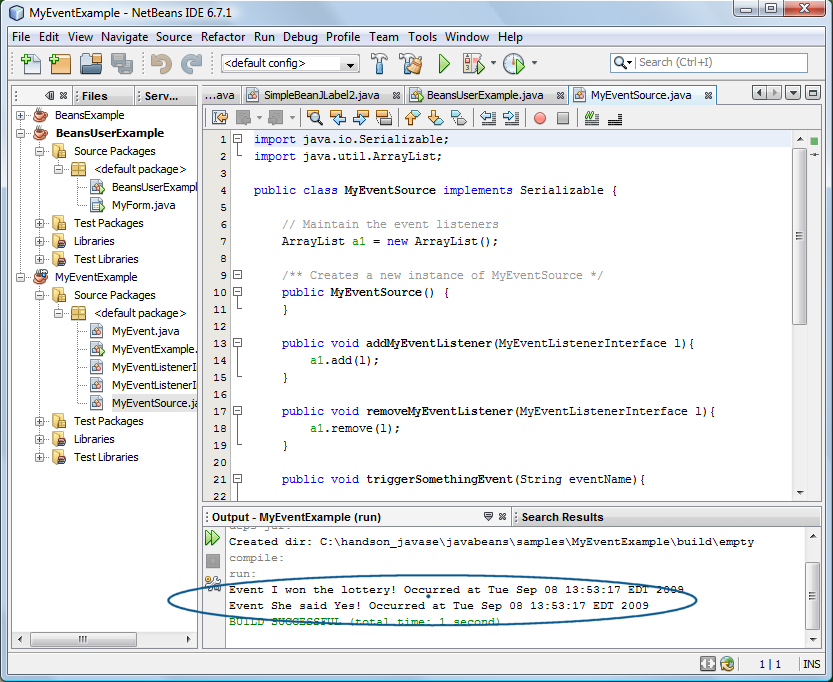
Solution:
This exercise up to this point is provided as a ready-to-open-and-run
NetBeans project as part of hands-on lab zip file. You can find it as
<LAB_UNZIPPED_DIRECTORY>/javabeans/samples/MyEventExample.
You can just open it and run it.
return to top of
the exercise
Summary
In this exercise, you learned how
to add event handling to the Java application.
Homework
exercise (for people who
are taking Sang Shin's "Java Programming online course")
You can do either of the two homeworks (Homework #1 or Homework #2)
mentioned below.
Homework #1
1. The homework is to modify
ActionEventExample project
above as following. (You might want to create a new project by
copying
the
ActionEventExample
project. You can name the homework project in any way you want
but here I am going to call it
MyActionEventExample.)
- Add another button.
- When the newly added button is clicked, invoke an event handler
which displays date and time of the event.
- Zip file of the the
MyActionEventExample
NetBeans project. (Someone else
should be able to open and run it as a NetBeans project.) You can
use your favorite zip utility or you can use "jar" utility that comes
with JDK as following.
- cd <parent directory that contains MyActionEventExample
directory>
(assuming you named your project as MyActionEventExample)
- jar cvf MyActionEventExample.zip MyActionEventExample (MyActionEventExample should
contain nbproject directory)
- Captured output screen -
name it as JavaIntro-javabeans.gif
orJavaIntro-javabeans.jpg (or
JavaIntro-javabeans.<whatver
graphics format>)
- Any screen capture that shows that your program is working is
good enough. No cosmetic polishment is required.
Homework #2
1. The homework exercise is to create
MyOwnEventExample project as
following.
- The new event is called MyOwnEvent.
- Write MyOwnEvent.java. This class has the following method
- getCurrentTime() - use java.util.Date() method to return
current date and time
- Write MyOwnEventListenerInterface.java.
- Write MyOwnListenerImpl.java.
- When event is fired, display the date and time of the event
- Write MyOwnEventSource.java
- Write MyOwnEventExample.java in which event registration and
event triggering is performed.
2. Send the following files to
javaprogramminghomework@javapassion.com
with
Subject as
JavaIntro-javabeans.
- Zip file of the the
MyOwnEventExample
NetBeans project. (Someone else
should be able to open and run it as a NetBeans project.) You can
use your favorite zip utility or you can use "jar" utility that comes
with JDK as following.
- cd <parent directory that contains MyOwnEventExample
directory>
(assuming you named your project as MyOwnEventExample)
- jar cvf MyOwnEventExample.zip MyOwnEventExample
(MyOwnEventExample directory
should
contain nbproject directory)
- Captured output screen -
name it as JavaIntro-javabeans.gif
orJavaIntro-javabeans.jpg (or
JavaIntro-javabeans.<whatver
graphics format>)
- Any screen capture that shows that your program is working is
good enough. No cosmetic polishment is required.
- If you decide to use
different IDE other than NetBeans, the zip
file should contain all the files that are needed for rebuilding the
project